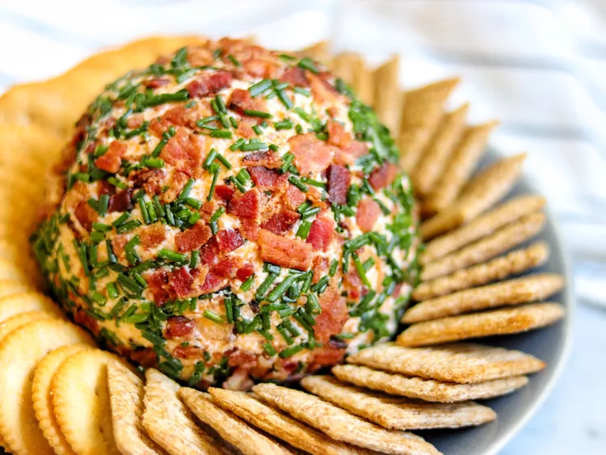

Bacon-Ranch Cheese Ball

Ingredients
- 8 slices bacon
- 2 (8 ounce) packages cream cheese, softened
- 2 cups shredded sharp Cheddar cheese
- 1 (1 ounce) package dry ranch dressing mix
- 1 teaspoon dried minced onion
- ½ teaspoon garlic powder
- ½ cup minced fresh chives
- crackers for serving
Directions
- Place bacon in a large skillet and cook over medium-high heat, turning occasionally, until evenly browned, about 10 minutes. Drain bacon slices on paper towels and allow to cool. Crumble bacon slices when cool enough to handle.
- Mix together cream cheese, Cheddar cheese, Ranch dressing mix, dried minced onion, garlic powder, and 1/2 of the crumbled bacon in a bowl until well combined. Place the other half of crumbled bacon in the refrigerator until ready to use.
- Form cheese mixture into a round ball (it's helpful to use plastic wrap while shaping it). Wrap in plastic wrap and refrigerate for at least 2 hours.
- Place remaining crumbled bacon on a plate and stir in minced chives. Remove plastic wrap from the cheese ball and roll it in the bacon and chive mixture, lightly pressing the topping to the cheese ball so it sticks.
- Place the coated cheese ball on a serving dish and surround with crackers for dipping.
Go to Home page